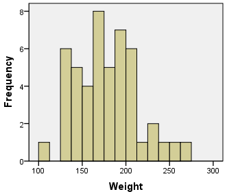
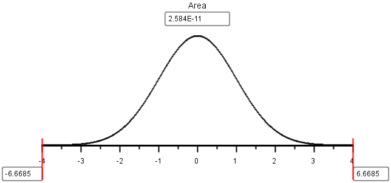
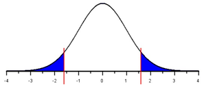
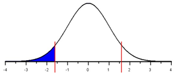
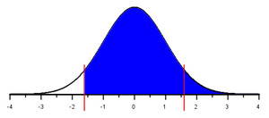

Lesson 9: Inference for One Mean: Sigma Known (Hypothesis Test)
The Ethan Allen
.jpg)
A tragic accident on Lake George in New York, USA, called into question the safety regulations for commercial tour boats. On October 5, 2005, a full boat of 47 passengers and 1 crew member began a routine one-hour tour of Lake George. As the operator initiated a turn, the tour boat “Ethan Allen” listed (tipped) enough to take water aboard. The force caused by dipping beneath the surface caused the vessel to list, shifting the passengers to one side of the boat. After this shift in the weight distribution, the boat capsized killing 20 passengers and injuring 9 others.

We assume that at the time of the accident, the stability requirements were based on the Coast Guard criteria of a mean of 140 pounds per person. So, the Ethan Allen was supposed to be able to safely transport passengers and crew with a mean weight of 140 pounds. We want to investigate if 140 pounds is a reasonable value for the mean weight of tour boat passengers. This leads to the research question: “Is the mean weight of tour boat passengers greater than 140 pounds?”
We can rewrite the research question in a declarative sentence to obtain a hypothesis, or a testable statement about a population.
The first hypothesis we will write is that the Coast Guard criteria is appropriate: “The mean weight of tour boat passengers is 140 pounds.” We call this the null hypothesis. The null hypothesis is a statement of the “status quo”, or the value typically considered to be appropriate. Notice that the null hypothesis is expressed with a statement involving equality (\(=\)).
\(H_0:~~\mu = 140\) pounds
In contrast to the null hypothesis, we write the alternative hypothesis. This is typically the statement that a researcher suspects is the actual truth. In our case, we suspect that “The mean weight of tour boat passengers is greater than 140 pounds.”
\(H_a:~~\mu > 140\) pounds
We label the null hypothesis \(H_0\) and the alternative hypothesis \(H_a\). In every hypothesis test in this class, the null hypothesis will be a statement involving equality. The alternative hypothesis can include greater than (\(>\)), less than (\(<\)), or not equal (\(\ne\)).
When we test hypotheses, we assume the null hypothesis is true. Because of this requirement, whenever we need to use μ in a calculation, we can use the value specified in the null hypothesis. When we conduct a hypothesis test, we gather evidence against the requirement that the null hypothesis is true. If we get enough evidence against the null hypothesis, we reject it. If we do not have sufficient evidence against the null hypothesis, we do not reject it.

How do we gather evidence against a null hypothesis? We collect data.
The marine accident report gives the weight (in pounds) of each of the passengers and the crew member. These values are reproduced below.
| 189 | 110 | 144 | 141 | 185 | 194 | 180 | 211 |
| 128 | 135 | 141 | 205 | 200 | 164 | 150 | 170 |
| 194 | 260 | 165 | 137 | 198 | 195 | 158 | 204 |
| 170 | 190 | 129 | 146 | 135 | 176 | 204 | 170 |
| 142 | 210 | 180 | 155 | 217 | 198 | 126 | 247 |
| 173 | 155 | 165 | 175 | 235 | 230 | 268 | 170 |

To help us understand the data, we first create a graph summarizing the values.

Next, we compute summary statistics. The sample size is \(n=48\), and the sample mean is \(\bar{x}=177.6\) pounds. According to the CDC, the standard deviation of the weights of individuals in the United States is \(\sigma=26.7\) pounds.
Considering the data as a random sample of all possible tour boat passengers, it appears that the true mean weight of tour boat passengers might be greater than 140 pounds. However, we need to check this with a formal test of our hypotheses.

It is not sufficient to gain an intuitive sense for the data. We will test if there is sufficient evidence to reject the null hypothesis that the true mean weight of tour boat passengers is 140 pounds.
Assuming the null hypothesis is true, what is the probability that we would observe a sample mean as extreme or more extreme than the values we observed? This probability is called the \(P\)-value.
To find the \(P\)-value, we first calculate the number of standard deviations that \(\bar{x}\) is away from the assumed value of true mean \(\mu=140\) pounds. This is our \(z\)-score. Then we use the applet to determine the probability of observing a value of \(z\) that is as large or larger than the value we observed.
\[\displaystyle{ z= \frac{ \bar{x} − \mu}{\sigma/\sqrt{n}} = \frac{177.6−140}{26.7/\sqrt{48}}=9.757 }\]
We use the applet to determine the probability of observing a value of \(z\) that is as large or larger than \(9.757\). This is the same as the probability of observing a value of \(\bar{x} =177.6\) or more pounds, given that the true mean really is \(\mu = 140\) pounds.
The area to the right of \(z=9.757\) is so small, the normal probability applet gives the area as “8.6086e-23.” This is how a computer represents scientific notation. This number is actually \(8.6086ex10^{-23}\) or in other words, 0.000 000 000 000 000 000 000 086 086. This is the probability that a mean of \(\bar x=177.6\) pounds or greater was observed just by chance assuming the true mean is \(\mu = 140\) lbs. This is very, very unlikely. A more plausible explanation is that the true mean weight \(\mu\) of individuals in the population is greater than 140 pounds.
Based on this analysis and the hypothesis test, the evidence against \(H_0\) is strong enough to conclude that if every seat on the Ethan Allen was occupied, that the boat would be carrying a greater load than it was certified to handle.

As a result of this accident, the United States government took several actions. The Coast Guard stability regulations were changed, and the assumed average weight per person was increased to 185 pounds. As a result, the safety of public vessels has been improved.

Body Temperatures of Healthy Adults
Introduction
Have you ever wondered how it was determined that the true mean body temperature of healthy adults is 98.6° ?
It is not exactly clear who first reported this value, but this temperature has been used since the 1800’s. One of the most influential researchers in this area is Carl Reinhold August Wunderlich. He reported measuring over 1,000,000 body temperatures on over 20,000 patients. When the temperature is measured in the arm pit, it is called an axillary temperature measurement. Based on his research, Wunderlich stated, “The axillary temperature of 98.6° F = 37° C\(\ldots\)is considered the central thermic point of health”. In other words, the mean body temperature of healthy adults is 98.6° F (or 37° C.)
- How would you design a study to determine if the mean body temperature of healthy adults is 98.6° ?
Data on Body Temperatures
A group of researchers led by Philip A. Mackowiak, MD, conducted a study to assess the true mean body temperatures of healthy adults. They selected \(n=148\) subjects between the ages of 18 and 40 years old, representative of the general population. Each volunteer was given a physical to assure that they were not ill at the time of the data collection. Their axillary body temperature was measured and reported in a paper published in the “Journal of the American Medical Association”. These data were extracted and are presented in the file BodyTemp. The body temperatures in the file are given in degrees Fahrenheit. Based on historical data, the standard deviation of body temperatures is assumed to be \(\sigma = 0.675\)° F.
- How could you use the body temperature data collected by Dr. Mackowiak to determine if the mean body temperature is really 98.6° F?
- Find the mean of the \(n=148\) body temperatures.
- Create a histogram illustrating the body temperatures of the individuals in the Mackowiak study.
- Based on the mean of the observations (Question 3) and the histogram of the data (Question 4,) does it appear that the mean body temperature of healthy adults is significantly different from 98.6° F?
- What is the shape of the distribution of all possible sample means? How do we know?
- Assuming that the true mean body temperature of healthy adults is \(\mu=98.6\)° F, and the population standard deviation is \(\sigma = 0.675\)° F, find the mean and standard deviation of the random variable \(\bar{x}\).
- Use the information in Question 7 to find the \(z\)-score for the mean you calculated in Question 3.
- What is the probability of observing a \(z\)-score that is as extreme or more extreme (further away from 0) than the \(z\)-score you calculated in Question 8?
- Assuming the mean body temperature really is 98.6° F, how likely would it be for a random sample of \(n=148\) people in the population to have a mean body temperature that is as extreme as was observed in Question 3?
- Results as unlikely as this demand an explanation. What do you think is the reason for a \(z\)-score as extreme as this?
- A. The group of volunteers included in the study had unusually low body temperatures.
- B. The researchers did not measure the temperature correctly.
- C. The true mean body temperature is different than 98.6° F.
- D. The sample size of \(n=148\) is not large enough.
- E. The data were collected on a cold day.
- F. The data are not normally distributed.
Hypothesis Test for the True Mean Body Temperature
Null and Alternative Hypotheses
It is commonly believed that the true mean body temperature is 98.6° F (37° C). In science, a statement or claim such as this is called a hypothesis. We can use data to test a hypothesis. If there is enough evidence against a hypothesis, we reject it in favor of something else.
The claim representing the “status quo” or the commonly held belief or the usual value is called the null hypothesis. In the case of body temperatures, our null hypothesis is defined by the belief that the true mean body temperature of healthy adults is 98.6° F.
We present the null hypothesis in the following way:
\[H_0: \mu = 98.6\]
If we gather enough evidence against the null hypothesis and determine that it should be rejected, we need another hypothesis to propose in its place. This is called the alternative hypothesis. If 98.6° F is not the correct body temperature, then it is logical to propose the following alternative hypothesis:
\[H_a: \mu \ne 98.6\]
To be brief in writing, we label the null hypothesis \(H_0\). The zero in the subscript represents “null,” “baseline,” “default,” “no effect,” etc. Similarly, we label the alternative hypothesis \(H_a\).
Our alternative hypothesis could have been written as:
- \(H_a: \mu \ne 98.6\) (two-sided hypothesis; two-tailed)
- \(H_a: \mu < 98.6\) (one-sided hypothesis; left-tailed)
- \(H_a: \mu > 98.6\) (one-sided hypothesis; right-tailed)
Notice that each of these is a viable alternative to the requirement that the mean is 98.6 degrees. We would only use \(<\) or \(>\) if we had a belief in advance that the mean was less than or greater than 98.6. If we do not have a strong reason to believe the mean is either smaller or larger than the stated value–before we collect our data–then, we use \(\ne\) in our alternative hypothesis.
It is important that the null and alternative hypotheses be determined prior to collecting the data. It is not appropriate to use the data from your study to choose the alternative hypothesis that will be used to test the same data! This is an example of using data twice, once to choose the test and again to conduct the test. It is okay to use data from a previous study to determine your null and alternative hypotheses, but it is an improper use of the statistical procedures to use the data to define and conduct a hypothesis test.
Notice that the null and alternative hypotheses are statements about a population parameter (e.g. \(\mu\).) They will never involve a sample statistic (e.g. \(\bar{x}\).) Population parameters are unknown, and we are trying to make a judgement about whether or not they are equal to a particular value. Sample statistics are calculated from our data, so there is no reason to do any test to assess what their value is.
The null hypothesis will always be a statement involving equality. This gives us a starting point in our analysis. In the reading for Normal Distributions, we assumed that the true mean body temperature was 98.6° F. This becomes the assumed value of the mean of the distribution of the random variable \(\bar{x}\).
The scientific method demands that we make a hypothesis (a claim or an educated guess). We assume that the null hypothesis is true and gather evidence against it. In other words, we “do research” (e.g., collect data) to gather evidence against that hypothesis. If we can gather enough evidence to discredit our initial hypothesis, we conclude that it was false, and begin the process again. If we are unable to reject the original hypothesis, we do not conclude that it is correct. For example, we do not know that Einstein’s Theory of Relativity is correct. We have simply not been able to disprove it\(\ldots\)yet.
In the same way, we never can prove a null hypothesis is true. We can only gather evidence against it. If we get enough evidence, we reject the null hypothesis.
Test Statistic
Assuming the null hypothesis is true, we assume that the true mean body temperature of healthy adults actually is \(\mu = 98.6^{\circ}\) F. Wanting to test this claim, researchers collected data on the mean body temperatures of \(n=148\) healthy adults. The mean of the observed values was \(\bar{x} = 98.23^{\circ}\) F.
A histogram of the body temperature data shows a nice bell-shaped distribution. Also, the sample mean, \(\bar{x}=98.23^\circ\) F, appears to be reasonably close to the assumed population mean, \(\mu=98.6^\circ\) F. However, it is important to remember that the standard deviation of \(\bar{x}\) is \(\frac{\sigma}{\sqrt{n}} = \frac{0.675}{\sqrt{148}}=0.055\). We need to determine how far \(\bar{x}\) is from \(\mu\). Since we know \(\sigma\) in this case, we can use the \(z\)-score to determine if \(\bar{x}\) is far from the assumed value. This is called the test statistic: \[ z = \frac{\bar{x} - \mu}{\sigma / \sqrt{n}} = \frac{98.23 - 98.6}{0.675 / \sqrt{148}} = -6.6685 \] Where \(z\) is the test statistic, \(\bar{x}\) is the sample mean, \(\mu\) is the population mean, \(\sigma\) is the standard deviation and \(n\) is the sample size. Based on the results from the formula above, \(\bar{x}\) is over 6 standard deviations below the mean!
\(P\)-value
Definition
The \(P\)-value is the probability of obtaining a test statistic (such as \(z\)) at least as extreme as the one you calculated, assuming the null hypothesis is true. In other words, our \(P\)-value is the probability that we would get a \(z\)-score that is as extreme or more extreme than \(z=-6.6685\), assuming the true mean is 98.6° F.
In advance of collecting the data, we may have had no idea whether the true mean would be greater than 98.6 or less than 98.6, if 98.6° F was not the right value. This is why we used a two-sided alternative hypothesis (\(H_a: \mu \ne 98.6\).) When computing the \(P\)-value, we need to continue this logic. So, we would have considered a value of \(z=-6.6685\) to be equally as extreme as \(z=6.6685\).
In the case of a two-sided test for one mean with \(\sigma\) known, the \(P\)-value is the area in the tails beyond \(\pm z\), in both the left and right tails of the standard normal distribution.

Using the applet, we shade the area in both tails and then type in the value of \(z=-6.669\). The applet reports an area of “2.584E-11.” This is the way computers indicate scientific notation. Expressed using more traditional notation, we get
\[ P\text{-value} = 2.584 \times 10^{-11} = 0.000~000~000~026 \]
You should always convert the computer’s notation involving “E” to scientific notation or decimal notation.
Scientific Notation:
Scientific notation is a method used to write very large or very small numbers without a lot of extra zeros. Computers express scientific notation using the letter “E.” For example, to write \(7.8\times 10^3\), a computer would output the expression 7.8E3. For example, the number \(7.8\times 10^3\) is \(7.8 \times 1000=7800\), since \(10^3 = 10 \cdot 10 \cdot 10 = 1000\). Another way to think of this is to move the decimal place in the number 7.8 three places to the right, which gives you \[ 7~\underset{\rightarrow}{8} \underset{\rightarrow}{0} \underset{\rightarrow}{0}. \]
This is an example of how very large numbers can be represented. To express small numbers (close to zero,) we use negative exponents. The number \(9.12 \times 10^{-5}\) is the same as \(9.12 \times (10^5)^{-1} = 9.12 \times (10000)^{-1}\). This can be written as \(9.12 \times 0.00001 = 0.0000912\). Since the exponent on the 10 is \(-5\), you move the decimal place in the number 9.1 five places to the left:
\[0.\underset{\leftarrow}{0}\underset{\leftarrow}{0}\underset{\leftarrow}{0}\underset{\leftarrow}{0}\underset{\leftarrow}{9}~1~2\]
- Similarly, the value \(2.57552 \times 10^{-11}\) can be written in regular notation as \(0.000~000~000~025~755~2\).
If the \(P\)-value is small, that implies that the \(z\)-score was very large (far away from 0.) In other words, \(\bar{x}\) was far away from \(\mu\). In this case, our \(z\)-score was 6.669 standard deviations below the mean. It is very unusual to get a value of \(\bar{x}\) that is this far from the value of \(\mu\) given in the null hypothesis. This implies that it is not plausible that the mean is equal to 98.6° F. We reject the null hypothesis and conclude that there is sufficient evidence that the true mean body temperature of healthy adults is not 98.6° F.
If this conclusion is correct, you may wonder why so many people think the true mean body temperature of healthy adults is 98.6° F (37° C). Good question!
Relationship to the Alternative Hypothesis
The \(P\)-value is determined using the alternative hypothesis. If the alternative hypothesis is two-sided (i.e. if the alternative hypothesis involves \(\ne\),) then the \(P\)-value is the area in the tails further than \(\pm z\). That is, it is the area to the left of \(z=-6.669\) plus the area to the right of \(z=+6.669\).
If the alternative hypothesis involves less than (such as \(\mu<98.6\),) we call it a left-tailed test. For a left-tailed test, the \(P\)-value is the area under the standard normal curve to the left of the test statistic, \(z\).
In the case of a right-tailed test, the \(P\)-value is the area to the right of the test statistic, \(z\).
In cases of very large or very small \(z\) statistics sometimes the shaded area is so small it can’t be seen. This is the case for \(z=-6.669\). It is such an extreme value for \(z\), it is hard to see the actual shading. However, shading is happening and the applet is calculating the right p-value. To help you visually see how the shading works, the three possibilities for alternative hypotheses are illustrated in the figures below, using a less extreme value of \(z=-1.6\).
|
Two-tailed |
Left-tailed |
Right-tailed |
|---|---|---|
|
\(H_0:~~\mu = 98.6\) |
\(H_0:~~\mu = 98.6\) |
\(H_0:~~\mu = 98.6\) |
|
\(H_a:~~\mu \ne 98.6\) |
\(H_a:~~\mu \lt 98.6\) |
\(H_a:~~\mu \gt 98.6\) |
|
 |
 |
 |
If \(\bar{x}\) is close to \(\mu\), then the \(z\)-score will be small. If the \(z\)-score is small, then there will be a lot of area in the tails beyond \(z\). In other words, the \(P\)-value will be large. These two possibilities are illustrated for a two-tailed test in the figure below. Similar results hold for a one-tailed test.
|
Large \(P\)-value |
Small \(P\)-value |
|---|---|

|

|
|
Fail to reject \(H_0\) |
Reject \(H_0\) |
In the case of the body temperatures, a large \(z\)-score (\(z=-6.669\)) led to a small \(P\)-value (the area in the tails.) We observed a value for \(\bar{x}\) that was very far from \(\mu=98.6\). Strictly due to chance, it would be very unlikely to observe a mean of \(\bar{x}=98.23^\circ\) F in a random sample of \(n=148\) if the true mean is 98.6° F.
Level of Significance, \(\alpha\)
How do we decide if the \(P\)-value is small enough to reject the null hypothesis? We need a way to determine if there is enough evidence to reject the null hypothesis that does not depend on the data. We need a number that can be used to determine if the \(P\)-value is small enough to reject the null hypothesis. This number is called the level of significance and is often denoted by the symbol \(\alpha\) (pronounced “alpha”.)
Memory Aid: Some students find it helpful to remember the decision rule using the couplet:
If the \(P\) is low, reject the null.
We will use the same decision rule for all hypothesis tests. If the \(P\)-value is less than \(\alpha\), we reject the null hypothesis. Conversely, if the \(P\)-value is greater than \(\alpha\), we fail to reject the null hypothesis. The level of significance, \(\alpha\), must be chosen prior to collecting the data. This is our standard for determining if the null hypothesis should be rejected. It is important that the personal bias of the researcher is not imposed on the data. So, we choose the \(\alpha\) level prior to collecting the data. If we wanted to reject the null hypothesis, we could compute the \(P\)-value and then unscrupulously choose the \(\alpha\) level. In every case, we could choose a value of \(\alpha\) that is larger than the computed \(P\)-value, and therefore always reject the null hypothesis. This practice would defeat the purpose of hypothesis testing.
Type I and Type II Errors
If the null hypothesis is true, for example, if the true body temperature of healthy adults really is 98.6° F, sometimes we will get a very large or very small value of \(\bar{x}\). This will lead to a very extreme \(z\)-score, strictly due to chance. In this case, we would reject the null hypothesis, even though it is true!
Whenever we reject a true null hypothesis, we say that a Type I error was committed. Assuming the null hypothesis is true, the level of significance (\(\alpha\)) is the probability of getting a value of the test statistic that is extreme enough that the null hypothesis will be rejected. In other words, the level of significance (\(\alpha\)) is the probability of committing a Type I error.
We choose \(\alpha\) to be some small number so that the probability of committing a Type I error is low. The most common value for \(\alpha\) is \(\alpha=0.05\). This is equal to \(\frac{1}{20}\). So, when the null hypothesis is true, there is a one-in-twenty chance that it will be rejected at the 0.05 level of significance. Other common choices for \(\alpha\) include \(\alpha = 0.1\) and \(\alpha=0.01\).
If committing a Type I error is undesirable, why can’t we let \(\alpha=0\)? This would make it impossible to commit a Type I error. Actually, this would also make it impossible to reject “any” null hypothesis! If \(\alpha=0\), no matter what test we do, no matter what the data show, we always fail to reject the null hypothesis. This would be pointless.
A Type I error is committed when we reject a true null hypothesis. Another problem that can arise is to fail to reject a false null hypothesis. This is called a Type II error. The probability of a Type II error is represented by \(\beta\).
We do not want to commit Type I errors, so why not choose a very small value for \(\alpha\)? If we choose \(\alpha\) to be so small that we rarely commit a Type I error, what would happen to the probability of committing a Type II error? (Think about it.)
If the \(\alpha\) value (the probability of committing a Type I error) is very small, the probability of committing a Type II error will be large. Conversely, if \(\alpha\) is allowed to be very large, then the probability of committing a Type II error will be very small. A level of significance of \(\alpha=0.05\) seems to strike a good balance between the probabilities of committing a Type I versus a Type II error. However, there may be instances where it will be important to choose a different value for \(\alpha\). The important thing is to choose \(\alpha\) before you collect your data. Typical choices of \(\alpha\) are \(0.05\) (most common), \(0.1\), and \(0.01\).
Read each of the following scenarios and answer the questions.
Scenario 1: The BYU-Idaho Honor Code specifically prohibits wearing flip-flops on campus.
A student is seen on campus wearing shoes that look somewhat like flip-flops.
Consider the following null and alternative hypotheses: \[
\begin{align}
H_0: & \textrm{Shoes of this type are technically flip-flops}\\
H_a: & \textrm{Shoes of this type are not technically flip-flops}\\
\end{align}
\] You are considering approaching this student to discuss their footwear.
- What action would lead to a Type I error in this case?
- What action corresponds to committing a Type II error?
- In this case, is a Type I error or a Type II error more serious? Justify your response.
Scenario 2: The U. S. Food and Drug Administration (FDA) regulates all prescription medications dispensed in the United States.
Part of their responsibility is to oversee the investigation of the safety and efficacy of new drugs. A new drug is under consideration for approval.
The following null and alternative hypotheses relate to the effectiveness of the proposed drug: \[
\begin{align}
H_0: & \textrm{The drug does not improve patients' conditions}\\
H_a: & \textrm{The drug improves patients' conditions}\\
\end{align}
\]
- What action by the FDA would lead to a Type I error in this case?
- What action by the FDA would be associated with committing a Type II error?
- In this case, is a Type I error or a Type II error more serious? Justify your response.
Scenario 3: With regard to a new drug under consideration for approval by the FDA, the following null and alternative hypotheses address the safety of the drug: \[ \begin{align} H_0: & \textrm{The drug does not cause serious side effects}\\ H_a: & \textrm{The drug causes serious side effects}\\ \end{align} \]
- What action by the FDA would lead to a Type I error in this case?
- What action by the FDA corresponds to committing a Type II error?
- In this case, is a Type I error or a Type II error more serious? Justify your response.
Requirements
Certain requirements are required for us to conduct the hypothesis test for a single mean with \(\sigma\) known.
First of all, we must assume that the data represent a simple random sample from a large population. In practice, this requirement is rarely satisfied. Frequently researchers working with humans rely on convenience samples, where the subjects volunteer to participate in a research project. The researcher may advertise using television, radio, and flyers in a clinic. If there is no relationship between the issue being studied and people’s desire to participate, this method works fairly well.
A second requirement is that the data are drawn from a population that has a normal distribution with mean \(\mu\) given in the null hypothesis (e.g. 98.6° F) and a known standard deviation (e.g. \(\sigma=0.675^\circ\) F.)
It turns out that the procedure actually works quite well–even if the data are not normally distributed–as long as \(\bar{x}\) follows a normal distribution. Under what conditions will \(\bar{x}\) be normally distributed? (Think about it.)
In the reading for Distribution of Sample Means & The Central Limit Theorem|Lesson 6, we learned that \(\bar{x}\) will follow a normal distribution if the data are drawn from a normal distribution or if the sample size (\(n\)) is large.
Putting this all together, we can summarize the requirements for a test for a single mean with \(\sigma\) known as:
- The data represent a simple random sample from a large population.
- The sample mean \(\bar{x}\) is normally distributed. This happens if either one of the following is true:
- The population is normally distributed.
- The sample size is large.
Worked Example: Body Temperatures
Summarize the relevant background information
The following example illustrates how to conduct the hypothesis test for a single mean with \(\sigma\) known. We will conduct a hypothesis test to determine if the true mean body temperature of healthy adults is 98.6° F, using the \(\alpha=0.05\) level of significance. We will assume that the population standard deviation is known to be \(\sigma=0.675^\circ\) F. This will summarize the work presented in the paragraphs above.
State the null and alternative hypotheses and the level of significance
\[ \begin{align} H_0:& \mu = 98.6 \\ H_a:& \mu \ne 98.6 \end{align} \] \[ \alpha = 0.05 \]
Describe the data collection procedures
The body temperatures of \(n = 148\) healthy adults were measured using calibrated thermometers in a clinical setting.
Give the relevant summary statistics
\[ \begin{array}{l} \bar{x} = 98.23\\ \sigma = 0.675\\ n = 148 \end{array} \]
Make an appropriate graph (e.g. a histogram) to illustrate the data

Verify the requirements have been met
- We assume that the individuals chosen to participate in the study represent a (simple) random sample from the population.
- \(\bar{x}\) will be normally distributed because the sample size is large. (Note: We could have also noticed that the body temperature data appears to be normally distributed, so even with a small sample size, \(\bar{x}\) would be normal.)
Give the test statistic and its value
\[z=-6.669\]
Mark the test statistic and \(P\)-value on a graph of the sampling distribution (i.e. the standard normal curve)

Find the \(P\)-value and compare it to the level of significance
\[P\textrm{-value} = 2.57552 \times 10^{-11} = 0.000~000~000~026 < 0.05 = \alpha\]
State your decision
Since the \(P\)-value is less than \(\alpha\), we reject the null hypothesis.
Present your conclusion in an English sentence, relating the result to the context of the problem
There is sufficient evidence to suggest that the true mean body temperature of healthy adults is different from 98.6° F.